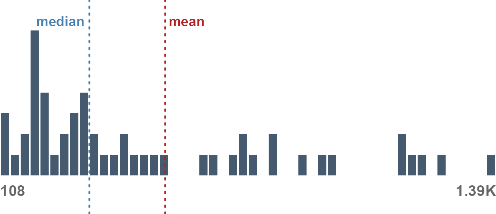
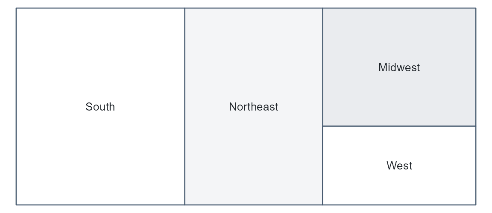

The datagoodr Workflow
workflow-overview.RmdThis is the mental model, without the mechanics. One artifact — the DGF — is the spine of everything datagoodr does.
One artifact at the center
Most tools treat a data dictionary as a document you write about the data, off to the side. datagoodr treats it as the control center: a single table, one row per variable, that is at once a governed data dictionary and the thing that drives every downstream step.
┌───────────────────────────────┐
raw CSV ─────▶│ DGF — one row per variable │─────▶ governed CSV
│ • what it is (type) │ (stabilized)
you curate ──▶│ • how to read it (rules) │
│ • what it means (labels) │─────▶ Research Guide
│ • how it looks (profile) │ (rendered profiles)
└───────────────────────────────┘Everything flows through it: the raw data is profiled into it, you curate it, and both the stabilized dataset and the rendered guide are produced from it. Once the DGF exists, the raw data is no longer needed to render documentation.
Managing data types is the hinge
The reason one artifact can drive so much is that nearly everything follows from a column’s type. Settle whether a column is a date, a category, a count, or an identifier, and three things fall out automatically:
- the stabilization rule that turns its raw form into a clean one,
- whether it can be imported to that type or must be protected as text, and
- the data profile and the visual used to render it.
So the workflow is really: get the types right (datagoodr guesses, you confirm), and let the rest follow.
A glimpse of the DGF
A DGF is an ordinary table. Build one from the package’s demo dataset — which carries one column of each type — and scan a few of its cells:
library(datagoodr)
dgf <- create_dgf(dg_demo, file = tempfile("dgf"), open = FALSE)| var_name | guess_label | desired_data_type | guess_match_kind | |
|---|---|---|---|---|
| event_date | event_date | calendar {{ date :: temporal }} | temporal | genome |
| region | region | geographic {{ mutually_exclusive :: categorical }} | categorical | |
| is_active | is_active | unordered {{ mutually_exclusive :: categorical }} | boolean | |
| revenue | revenue | measurement {{ quantity :: number }} | number | |
| county_fips | county_fips | county_fips {{ mutually_exclusive :: categorical }} | identifier | mask+lexicon |
| notes | notes | unordered {{ mutually_exclusive :: categorical }} | categorical |
The guess_* cells are datagoodr’s first pass (the
guess_label reads the detected leaf;
guess_match_kind says how it was recognized); the
desired_* cells are the answer you confirm. Other columns
(not shown) hold the stabilizer rule, the stored profile, and the
dictionary text.
A glimpse of the data profiles
From each column’s type and values, datagoodr computes a profile and
renders it with a type-appropriate visual — the same functions the
Research Guide uses. A numeric column
(revenue) becomes a histogram and a statistics table:
dg_graphic(dgf, "revenue", label = "")
dg_stats(dgf, "revenue")STATS:
| STAT | VAL |
|---|---|
| Minimum | 55.91 |
| Median | 338.8 |
| Mean | 534.83 |
| Maximum | 2,100.88 |
| Skew | 1.44 |
| Kurtosis | 1.58 |
A categorical column (region) becomes a
treemap and a frequency table:
dg_graphic(dgf, "region", label = "")
A date would render as a calendar heat-map, a boolean as a two-bar chart, free text as a word cloud. The profile is chosen by type — which is why getting the types right is the whole game. (Data Profiling and Profiles & Research Guides show the rest, and Data Reporting Functions opens up the machinery.)
The loop
Governance is not one-shot. You clean a column, correct a type, add a
label; and update_dgf() reconciles the DGF with the new
data — recomputing the profile for what changed while preserving
everything you curated. The DGF is a living document, not a
snapshot.